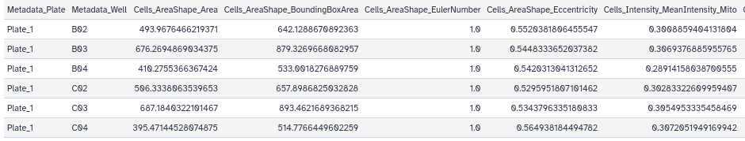
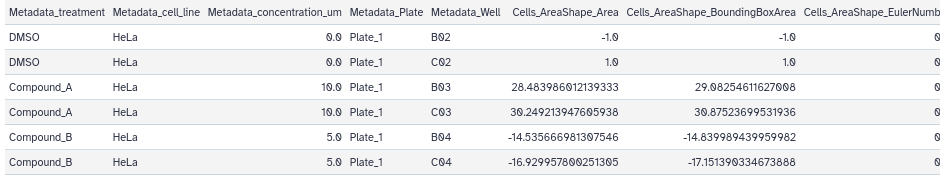
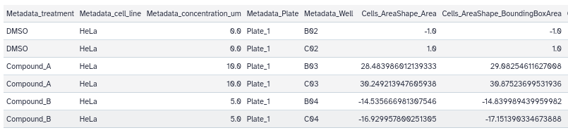
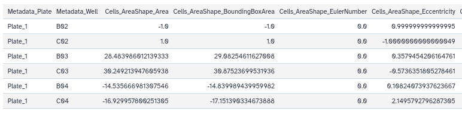
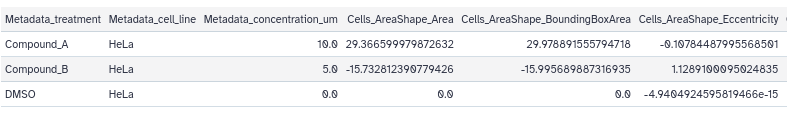
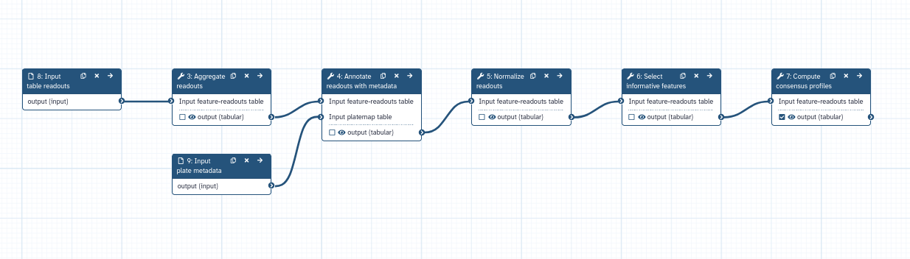

Use Pycytominer in Galaxy for processing high dimensional image-based readouts
| Author(s) |
|
OverviewQuestions:
Objectives:
How do I process high-dimensional readouts using Galaxy?
How can I process CellProfiler or DeepProfiler feature readouts with Pycytominer in Galaxy?
Requirements:
Learn how to execute the five main Pycytominer steps
Create a complete workflow for processing data with Pycytominer
- Introduction to Galaxy Analyses
- tutorial Hands-on: FAIR Bioimage Metadata
- tutorial Hands-on: REMBI - Recommended Metadata for Biological Images – metadata guidelines for bioimaging data
- tutorial Hands-on: Introduction to Image Analysis using Galaxy
- slides Slides: Nucleoli segmentation and feature extraction using CellProfiler
- tutorial Hands-on: Nucleoli segmentation and feature extraction using CellProfiler
Time estimation: 1 hourLevel: Intermediate IntermediateSupporting Materials:Published: Oct 8, 2026Last modification: Oct 8, 2026License: Tutorial Content is licensed under Creative Commons Attribution 4.0 International License. The GTN Framework is licensed under MITversion Revision: 1
High-content imaging screens generate thousands of microscopy images capturing how cells respond to genetic or chemical perturbations. In particular, Cell Painting assays are a high-content/high-throughput imaging methods designed to reveal a broad range of cellular phenotypes. Image analysis makes it possible to extract numerical information from cell shape, intensity, texture, granularity, producing what are known as “morphological profiles”. These features combined form morphological profiles offering a window into a variety of biological processes, such as how cells react to genetic modifications, drug exposure, and shifts in their environment (Seal et al. 2025). Extracting biological meaning from these images requires transforming raw features and readouts into clean, comparable profiles. Because of the sheer number of values involved, these results can be extremely large, and specific frameworks are needed to process such morphological profiles correctly.
In this context, Pycytominer is a Python toolkit for processing high dimensional readouts from high-throughput image-based profiling experiments (Serrano et al. 2025).
In this tutorial, you will learn how to run a Pycytominer pipeline using Galaxy. We will follow the different steps explained in the Pycytominer documentation. If you want a more comprehensive explanation of each step, please feel free to visit the main Pycytominer main documentation page or the GitHub repository! each step, please feel free to visit the main Pycytominer main documentation page or the GitHub repository!
AgendaIn this tutorial, we will deal with:
Getting data
A synthetic dataset necessary for this tutorial can be created following the instructions of the Pycytominer documentation.
Experimental design:
| Property | Value |
|---|---|
| Plates (biological replicates) | 1 |
| Wells per plate | 6 (2 × DMSO vehicle control, 2 × Compound A, 2 × Compound B) |
| Cells per well | ~100 |
| Total single-cell measurements | ~600 |
| Morphological features | 11 (across three compartments) |
For simplicity, we provide the generated files for this tutorial.
Hands On: Data Upload
If you are logged in, create a new history for this tutorial
To create a new history simply click the new-history icon at the top of the history panel:
- Download the following image-based profiles and import them into your Galaxy history.
If you are importing the files via URL:
- Copy the link location
Click galaxy-upload Upload at the top of the activity panel
- Select galaxy-wf-edit Paste/Fetch Data
Paste the link(s) into the text field
Press Start
- Close the window
If you are importing the files from the shared data library:
As an alternative to uploading the data from a URL or your computer, the files may also have been made available from a shared data library:
- Go into Libraries (left panel)
- Navigate to the correct folder as indicated by your instructor.
- On most Galaxies tutorial data will be provided in a folder named GTN - Material –> Topic Name -> Tutorial Name.
- Select the desired files
- Click on Add to History galaxy-dropdown near the top and select as Datasets from the dropdown menu
In the pop-up window, choose
- “Select history”: the history you want to import the data to (or create a new one)
- Click on Import
Confirm the datatypes are correct (
tabularfor both profiles)
- Click on the galaxy-pencil pencil icon for the dataset to edit its attributes
- In the central panel, click galaxy-chart-select-data Datatypes tab on the top
- In the galaxy-chart-select-data Assign Datatype, select
datatypesfrom “New Type” dropdown
- Tip: you can start typing the datatype into the field to filter the dropdown menu
- Click the Save button


Step 1: Aggregate — From Cells to Wells
Aggregation collapses single-cell measurements into a single profile per well or per sample by computing a summary statistic (such as the median) across all cells.
Hands On: Aggregate plate readouts with Pycytominer
- Aggregate readouts ( Galaxy version 1.6.1+galaxy0) with the following parameters to aggregate readouts:
- param-file “Input feature-readouts table”:
01_single_cells.tsvfile- “Aggregation Column”: Select “c1:Metadata_Plate” and “c2:Metadata_Well”
- “Aggregation function”:
MeanRename galaxy-pencil the generated file to
01_output_aggregate.tsv.
- Click on the galaxy-pencil pencil icon for the dataset to edit its attributes
- In the central panel, change the Name field
- Click the Save button
- Click on the visualise icon galaxy-visualise of the file to visually inspect the image-based profiles using the Tabulator visualisation plugin.
The 600 single-cell measurements are now aggregated into 6 profiles, one per well: for each feature, the values of the ~100 cells in a well are summarized into a single value (here, the mean).

Step 2: Annotate — Adding Experimental Context
Annotation merges these profiles with experimental metadata (i.e. plate and well identifiers, and other conditions) so each profile is linked to what was done to the cells.
Hands On: Annotate readouts with metadata using Pycytominer
- Annotate readouts with metadata ( Galaxy version 1.6.1+galaxy0) with the following parameters:
- param-file “Input feature-readouts table”:
01_output_aggregate.tsvfile- “Column describing the wells in the feature-readouts table”: Select “c2:Metadata_Well”
- param-file “Input platemap table”:
01_platemap.tsvfile- “Column describing the wells in the platemap”: Select “c1:well_position”
- Rename galaxy-pencil the generated file to
02_output_annotated.tsv.- Click on the visualise icon galaxy-visualise of the file to visually inspect the image-based profiles using the Tabulator visualisation plugin.
Three additional columns are now added to the table: “Metadata_treatment”, “Metadata_cell_line” and “Metadata_concentration_um”. Pycytominer adds the Metadata_ prefix to the plate map columns (treatment → Metadata_treatment) to distinguish them from the morphological features. All this information is important to give more context to the data. Metadata_treatment allows us to identify the DMSO control wells used for normalization.

Step 3: Normalize by Removing Technical Variation
Normalization rescales features so they can be compared with each other. Without it, features with large absolute values (e.g. cell area) would dominate any downstream distance calculation, regardless of whether they carry biological signal. A common approach is to standardize each feature against control samples: here, every well is expressed relative to the DMSO control wells. In experiments with several plates or batches, normalizing each plate against its own controls also corrects technical variation, such as differences in staining, imaging conditions or cell density.
Hands On: Normalize readouts with Pycytominer
- Normalize readouts ( Galaxy version 1.6.1+galaxy0) with the following parameters:
- param-file “Input feature-readouts table”:
02_output_annotated.tsvfile- “Column with normalization values”: Select “c1:Metadata_treatment”
- “Value”: Type “DMSO”
- “Normalization method”: Select “Standardize”
- Rename galaxy-pencil the generated file to
03_output_normalized.tsv.- Click on the visualise icon galaxy-visualise of the file to visually inspect the image-based profiles using the Tabulator visualization plugin.
With the standardize normalization method, feature becomes a z-score based on the mean and standard deviation of the DMSO wells. So DMSO wells end up around 0, and treated wells show how many standard deviations they differ from the control. All features are now expressed in the same unit (standard deviations from the DMSO control), so they can be compared with each other.

Step 4: Feature Selection — Keeping Only Informative Features
Feature selection removes uninformative or redundant features, such as those with low variance, high correlation with other features, or missing values, yielding a compact and reliable feature set.
Hands On: Select informative features with Pycytominer
- Select informative features ( Galaxy version 1.6.1+galaxy0) with the following parameters:
- param-file “Input feature-readouts table”: ‘03_output_normalized.tsv` file
- “Operations”: Select “Variance Threshold” and “Blocklist”
- Rename galaxy-pencil the generated file to
04_output_features.tsv.- Click on the visualise icon galaxy-visualise of the file to visually inspect the image-based profiles using the Tabulator visualization plugin.
Variance Threshold removes features that barely vary across samples, and Blocklist removes features that are known to be noisy or uninformative in image-based profiling. Thanks to the Variance Threshold operation, the table now has 15 columns instead of 16: Cells_AreaShape_EulerNumber was removed because it has the same value in every well, so it carries no information.

Step 5: Consensus — Collapsing Replicates
The Compute Consensus tool collapses replicate profiles into one consensus profile per treatment group by computing the mean across all replicates.
Hands On: Compute consensus profiles with Pycytominer
- Compute consensus ( Galaxy version 1.6.1+galaxy0) with the following parameters:
- param-file “Input feature-readouts table”: 04_output_features.tsv` file
- “Column with unique condition”: Select “c1:Metadata_treatment”, “c2:Metadata_cell_line” and “c3:Metadata_concentration_um”
- “Reduction operation”: Select “Mean”
- Rename galaxy-pencil the generated file to
05_output_consensus.tsv.- Click on the visualize icon galaxy-visualise of the file to visually inspect the image-based profiles using the Tabulator visualization plugin.
The table now has 3 profiles, one per treatment (DMSO, Compound A and Compound B).

A full workflow for table readouts processing
You can now create a workflow from the different Pycytominer steps in your history:
Hands On: Extract Pycytominer workflow from history
Now we can extract the workflow for batch processing:
Clean up your history: remove any failed (red) jobs from your history by clicking on the galaxy-delete button.
This will make the creation of the workflow easier.
Click on galaxy-history-options (History options) at the top of your history panel and select Extract workflow.
The central panel will show the content of the history in reverse order (oldest on top), and you will be able to choose which steps to include in the workflow.
Replace the Workflow name to something more descriptive.
Rename each workflow input in the boxes at the top of the second column.
If there are any steps that shouldn’t be included in the workflow, you can uncheck them in the first column of boxes.
Click on the Create Workflow button near the top.
You will get a message that the workflow was created.
- Name it “pycytominer-full-steps”.
- Uncheck
01_platemap.tsvand01_single_cells.tsvas inputs (the workflow is supposed to be applied to the image-based profiles directly).Edit the workflow you just created:
- Select “Input dataset” from the list of tools. The step param-file 8: Input Dataset appears.
- Select “Input dataset” from the list of tools. The step param-file 9: Input Dataset appears.
- Change the “Label” of param-file 8: Input Dataset to
input table readouts.- Change the “Label” of param-file 9: Input Dataset to
input plate metadata.- Connect the output of param-file 8: input table readouts to the input of tool 3: Aggregate readouts.
- Connect the output of param-file 9: input plate metadata to the “Input plate Table” input of tool 4: Annotate readouts with metadata.
- Mark the results of tool 7: Compute Consensus Profile as the primary outputs of the workflow (by clicking on the checkboxes of the outputs).

You have now a Pycytominer automatized workflow in Galaxy!

Conclusion
The following tutorial uses high-content imaging analysis as an example, but the same Pycytominer tools can be used in many other contexts for data wrangling, normalization, and annotation… Find your own solution!
You've Finished the Tutorial
Key points
CellProfiler readouts can be easily processed in Galaxy using the Pycytominer CLI
Reproducible workflows can be created to process readouts consistently
Frequently Asked Questions
Have questions about this tutorial? Have a look at the available FAQ pages and support channelsUseful literature
Further information, including links to documentation and original publications, regarding the tools, analysis techniques and the interpretation of results described in this tutorial can be found here.
References
- Seal, S., M.-A. Trapotsi, O. Spjuth, S. Singh, J. Carreras-Puigvert et al., 2025 Cell Painting: a decade of discovery and innovation in cellular imaging. Nature methods 22: 254–268. https://www.nature.com/articles/s41592-024-02528-8
- Serrano, E., S. N. Chandrasekaran, D. Bunten, K. I. Brewer, J. Tomkinson et al., 2025 Reproducible image-based profiling with Pycytominer. Nature methods 22: 677–680. https://www.nature.com/articles/s41592-025-02611-8
Feedback
Did you use this material as an instructor? Feel free to give us feedback on how it went.
Did you use this material as a learner or student? Click the form below to leave feedback.

Citing this Tutorial
- Riccardo Massei, Use Pycytominer in Galaxy for processing high dimensional image-based readouts (Galaxy Training Materials). https://training.galaxyproject.org/training-material/topics/imaging/tutorials/pycytominer/tutorial.html Online; accessed TODAY
- Hiltemann, Saskia, Rasche, Helena et al., 2023 Galaxy Training: A Powerful Framework for Teaching! PLOS Computational Biology 10.1371/journal.pcbi.1010752
- Batut et al., 2018 Community-Driven Data Analysis Training for Biology Cell Systems 10.1016/j.cels.2018.05.012
@misc{imaging-pycytominer, author = "Riccardo Massei", title = "Use Pycytominer in Galaxy for processing high dimensional image-based readouts (Galaxy Training Materials)", year = "", month = "", day = "", url = "\url{https://training.galaxyproject.org/training-material/topics/imaging/tutorials/pycytominer/tutorial.html}", note = "[Online; accessed TODAY]" } @article{Hiltemann_2023, doi = {10.1371/journal.pcbi.1010752}, url = {https://doi.org/10.1371%2Fjournal.pcbi.1010752}, year = 2023, month = {jan}, publisher = {Public Library of Science ({PLoS})}, volume = {19}, number = {1}, pages = {e1010752}, author = {Saskia Hiltemann and Helena Rasche and Simon Gladman and Hans-Rudolf Hotz and Delphine Larivi{\`{e}}re and Daniel Blankenberg and Pratik D. Jagtap and Thomas Wollmann and Anthony Bretaudeau and Nadia Gou{\'{e}} and Timothy J. Griffin and Coline Royaux and Yvan Le Bras and Subina Mehta and Anna Syme and Frederik Coppens and Bert Droesbeke and Nicola Soranzo and Wendi Bacon and Fotis Psomopoulos and Crist{\'{o}}bal Gallardo-Alba and John Davis and Melanie Christine Föll and Matthias Fahrner and Maria A. Doyle and Beatriz Serrano-Solano and Anne Claire Fouilloux and Peter van Heusden and Wolfgang Maier and Dave Clements and Florian Heyl and Björn Grüning and B{\'{e}}r{\'{e}}nice Batut and}, editor = {Francis Ouellette}, title = {Galaxy Training: A powerful framework for teaching!}, journal = {PLoS Comput Biol} }
Funding
These individuals or organisations provided funding support for the development of this resource
Congratulations on successfully completing this tutorial!
You can use Ephemeris's
shed-tools installcommand to install the tools used in this tutorial.shed-tools install [-g GALAXY] [-a API_KEY] -t <(curl https://training.galaxyproject.org/training-material/api/topics/imaging/tutorials/pycytominer/tutorial.json | jq .admin_install_yaml -r)Alternatively you can copy and paste the following YAML
--- install_tool_dependencies: true install_repository_dependencies: true install_resolver_dependencies: true tools: - name: pycytominer_aggregate owner: imgteam revisions: 32b51ca17b99 tool_panel_section_label: Imaging tool_shed_url: https://toolshed.g2.bx.psu.edu/ - name: pycytominer_annotate owner: imgteam revisions: d7d9a7955cca tool_panel_section_label: Imaging tool_shed_url: https://toolshed.g2.bx.psu.edu/ - name: pycytominer_consensus owner: imgteam revisions: 17d95ef305d2 tool_panel_section_label: Imaging tool_shed_url: https://toolshed.g2.bx.psu.edu/ - name: pycytominer_feature_select owner: imgteam revisions: b36d0fb80349 tool_panel_section_label: Imaging tool_shed_url: https://toolshed.g2.bx.psu.edu/ - name: pycytominer_normalize owner: imgteam revisions: ecc1d28dc344 tool_panel_section_label: Imaging tool_shed_url: https://toolshed.g2.bx.psu.edu/